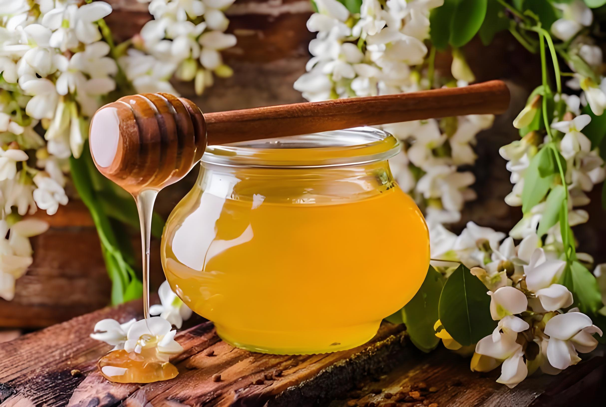

|  | &茉莉蜜茶饮料具有补充营养、促进消化、缓解便秘、增进食欲、辅助改善睡眠质量的功能及作用，但需注意适量饮用。 1、补充营养 茉莉蜜茶饮料主要是由茉莉花和蜂蜜等原料制作而成，含有丰富的维生素C、柠檬酸钠等营养成分，适量饮用可以为人体补充所需要的营养物质，还可以促进新陈代谢，有利于身体健康。 2、促进消化 茉莉蜜茶饮料中含有丰富的膳食纤维，可以促进胃肠道蠕动，有利于食物的消化与吸收，具有促进消化的功效。如果患者存在便秘的情况，可以适量饮用茉莉蜜茶饮料，有利于改善便秘的情况。 3、缓解疲劳 茉莉蜜茶饮料中含有一定的咖啡因，可以刺激大脑皮层，具有缓解疲劳的功效，可以改善患者在平时疲劳犯困的情况。 4、增进食欲 茉莉蜜茶饮料中含有大量的果胶、茶多酚等成分，可以刺激胃酸分泌，具有增进食欲的功效，可以改善患者食欲不振的情况。如果患者存在胃肠道不适的症状，可以适量饮用茉莉蜜茶饮料，有利于促进疾病的恢复。 5、辅助改善睡眠质量 茉莉蜜茶饮料中含有大量的茶多酚，可以在一定程度上兴奋中枢神经系统，具有辅助改善睡眠质量的功效。如果存在失眠障碍的患者，可以适量饮用茉莉蜜茶饮料，有利于辅助改善睡眠质量。 在日常生活中，建议患者需要注意避免过量饮用茉莉蜜茶饮料，以免引起腹胀、腹痛等不适症状。 |
|||